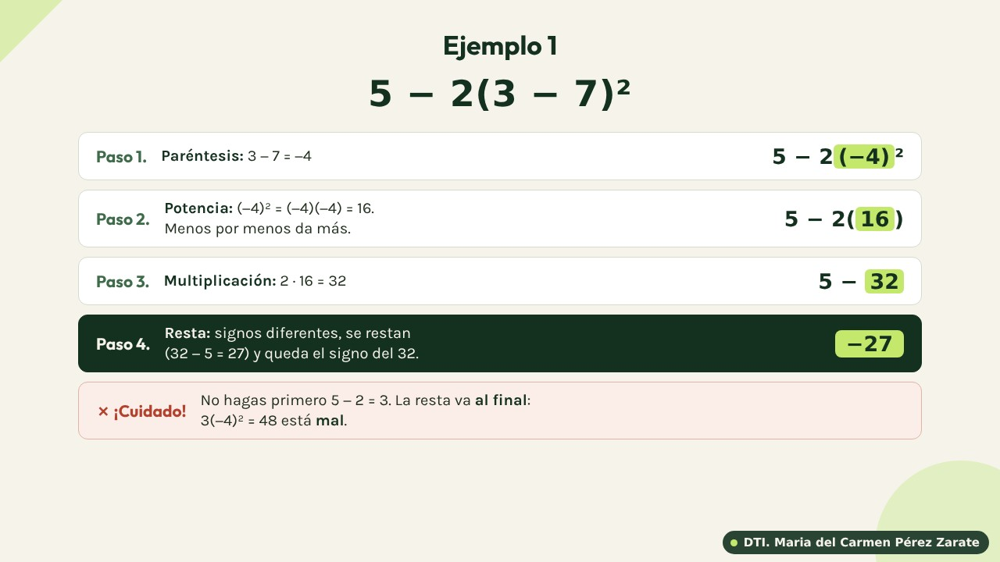
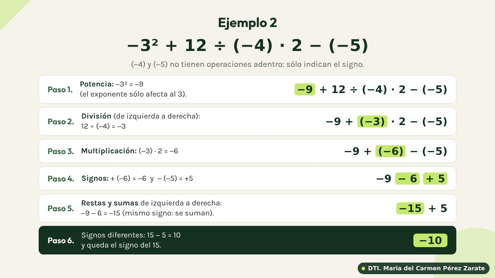

Que el estudiante repase cómo se trabaja con números negativos —multiplicar, dividir, elevar a una potencia, sumar y restar— para no equivocarse con los signos en álgebra y al evaluar funciones (por ejemplo f(x) = x² o f(x) = ax² + b, que se estudian en Matemáticas 3).
1 · Multiplicar y dividir
Primero se multiplican (o dividen) los números sin fijarse en el signo. Después se decide el signo con esta tabla:
| Signos | Resultado | Ejemplo |
|---|---|---|
| (+) por (+) | + más | (4)(3) = 12 |
| (−) por (−) | + más | (−4)(−3) = 12 |
| (+) por (−) | − menos | (4)(−3) = −12 |
| (−) por (+) | − menos | (−4)(3) = −12 |
Signos iguales dan más; signos diferentes dan menos. Para dividir es exactamente igual: −12 ÷ (−3) = 4 y 12 ÷ (−3) = −4.
Si multiplicas varios números, cuenta los signos menos: si son una cantidad par (2, 4, …) el resultado es positivo; si son impar (1, 3, …) es negativo. Ejemplo: (−1)(−2)(−3) = −6, porque hay tres signos menos.
2 · Potencias de números negativos
Elevar al cuadrado es multiplicar el número por sí mismo. Aquí está el error más común de todos: los paréntesis cambian el resultado.
| Se escribe | Significa | Resultado |
|---|---|---|
| (−3)² | (−3)(−3): el −3 completo se multiplica por sí mismo | 9 |
| −3² | −(3 · 3): el exponente sólo afecta al 3; el signo se queda afuera | −9 |
| (−2)³ | (−2)(−2)(−2): tres signos menos (impar) | −8 |
| −(−4)² | primero (−4)² = 16 y después el signo de afuera | −16 |
3 · Sumar y restar
Dos signos menos seguidos, − (−, se convierten en un +.
4 · Jerarquía de operaciones
Cuando una operación tiene varias partes, se resuelve en este orden. Hazlo paso a paso, sin saltarte ninguno, y en cada paso usa las leyes de los signos:


5 · Errores más comunes
| ✗ Error | ✓ Correcto | ¿Por qué? |
|---|---|---|
| (−3)² = −9 | (−3)² = 9 | Menos por menos da más. |
| f(−3) = −3² = −9 | f(−3) = (−3)² = 9 | Faltaron los paréntesis al sustituir. |
| −(−2)² = 4 | −(−2)² = −4 | Primero la potencia (4) y después el signo de afuera. |
| −2(−3)² = 36 | −2(−3)² = −18 | La potencia va antes que la multiplicación: (−3)² = 9 y luego −2 · 9. |
| −4 − 2 = −2 | −4 − 2 = −6 | Mismo signo: se suman 4 + 2 y se conserva el menos. |
| −7 + 3 = −10 | −7 + 3 = −4 | Signos diferentes: se restan, no se suman. |
| 5 − (−3) = 2 | 5 − (−3) = 8 | Restar un negativo es sumar. |
6 · Ejercicios: practica los signos
Resuelve cada operación, escribe el resultado y oprime Comprobar (o la tecla Enter). Para el signo menos usa el guion - del teclado.
Hay tres tipos: multiplicar y dividir, potencias, y sumar y restar. Si te equivocas, la página te muestra el procedimiento paso a paso.
Te tocan 10 ejercicios al azar de un banco de 100. Cuando termines, oprime Otros 10 ejercicios para volver a intentar con ejercicios diferentes.
7 · Ejercicios: jerarquía de operaciones
Resuelve cada operación respetando el orden: paréntesis, potencias, multiplicaciones y divisiones, y al final sumas y restas, cuidando los signos en cada paso. Escribe el resultado y oprime Comprobar (o la tecla Enter).
Resuélvelo primero en tu cuaderno, paso a paso. Si te equivocas, la página te muestra el procedimiento.
Te tocan 10 ejercicios al azar de un banco de 100, de los más sencillos a los más largos. Oprime Otros 10 ejercicios para volver a intentar.